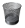

User Interface Elements
Within each area of Nimbul (see Navigation), you will encounter several standard UI elements.
- Tabs: Most Nimbul pages contain several tabs, representing tasks or smaller sets of information about a cluster, an instance or another aspect of your cloud accounts.
- Tables: Information is presented in tables to make it easy to skim. Tables often include links to details and icons for performing related actions.
- Editable Labels: A dotted line under a label indicates that the object can be renamed — simply click, enter a new name and click Save.
- Auto-complete: When you type characters into Search boxes and other text fields, Nimbul automatically provides suggestions based on what you have typed. You can select suggested items directly from auto-complete pop-ups.
- Icons: Here’s a sampling of the icons you’ll see throughout Nimbul:
| Icon | Description |
| Add new item | |
| Launch/enable selected item | |
|  | Delete selected item |
| Refresh current view | |
| Reboot selected item | |
| Terminate selected item | |
| Attach item or create item using selected item | |
| Detach or release assigned item | |
| Disable selected item | |
| Run selected item |
To learn the function of an icon not listed in this table, hover over the icon to view the tooltip.
Next: Object Hierarchy »